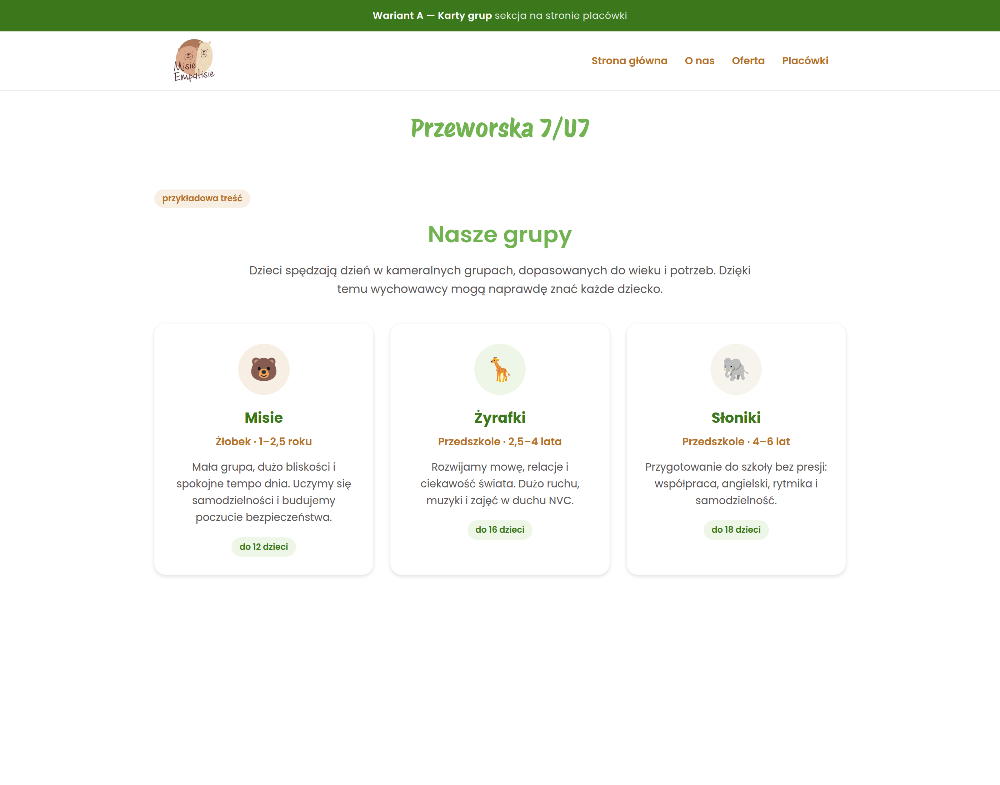
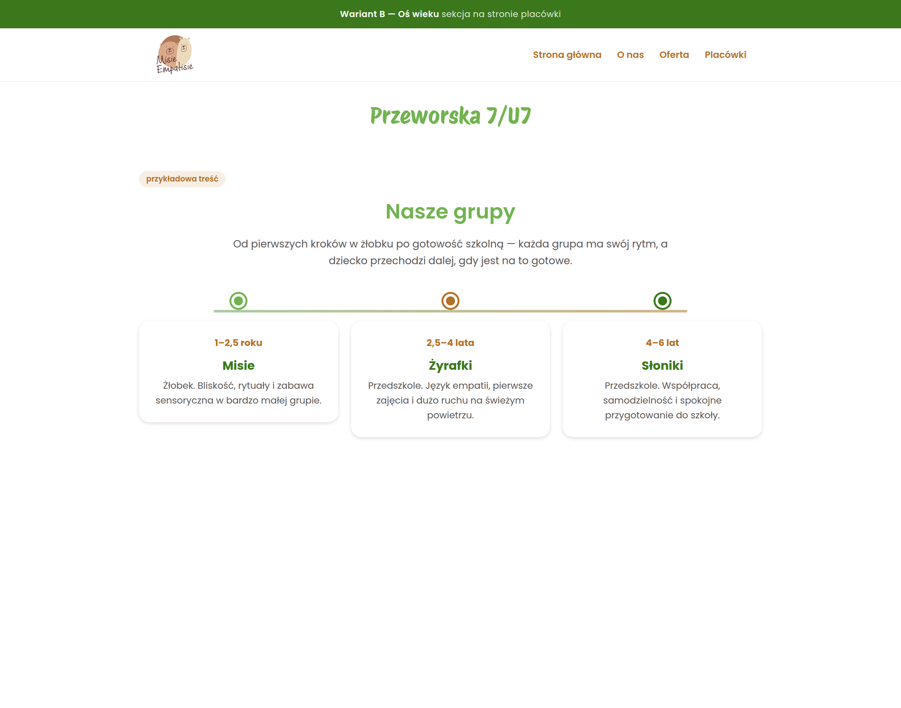
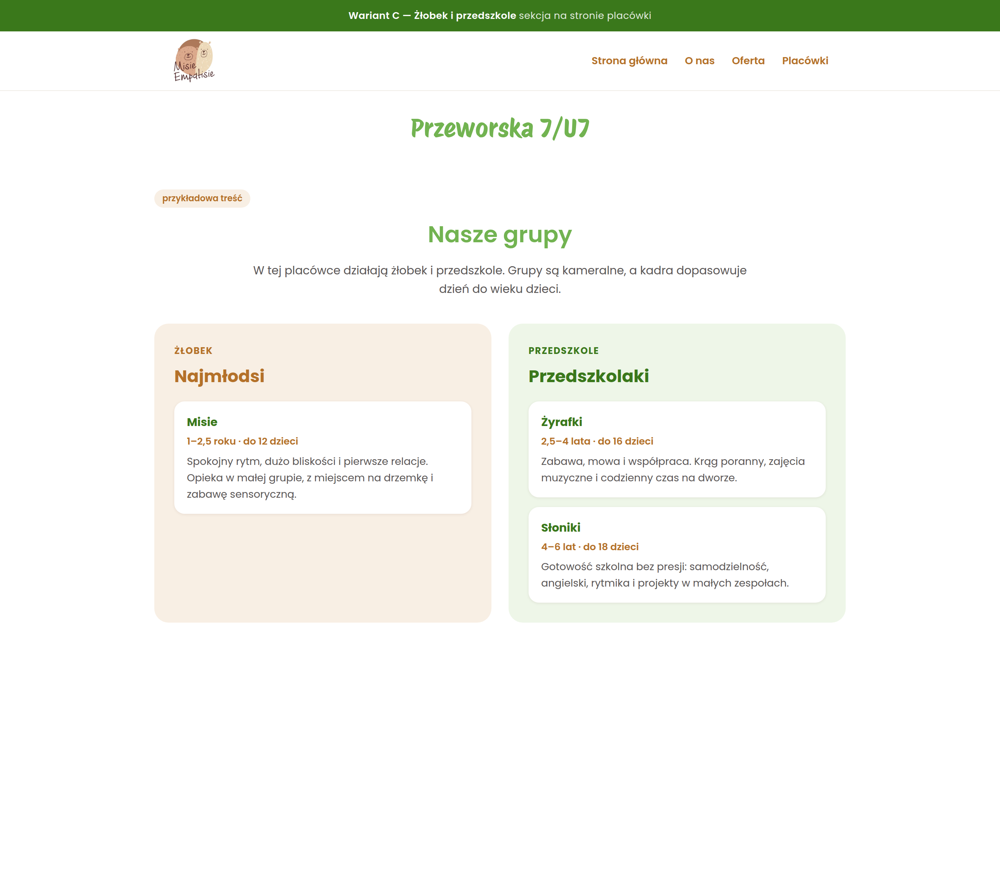
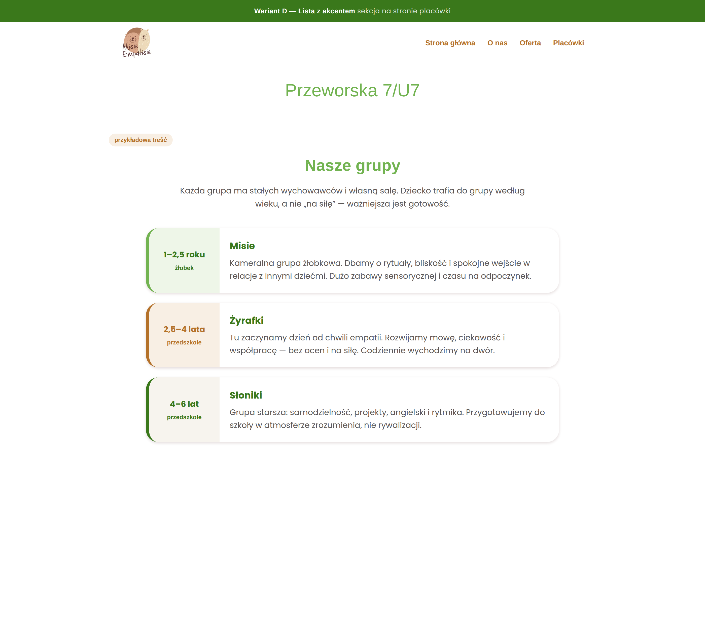
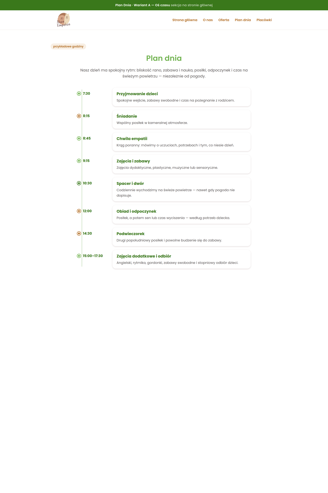
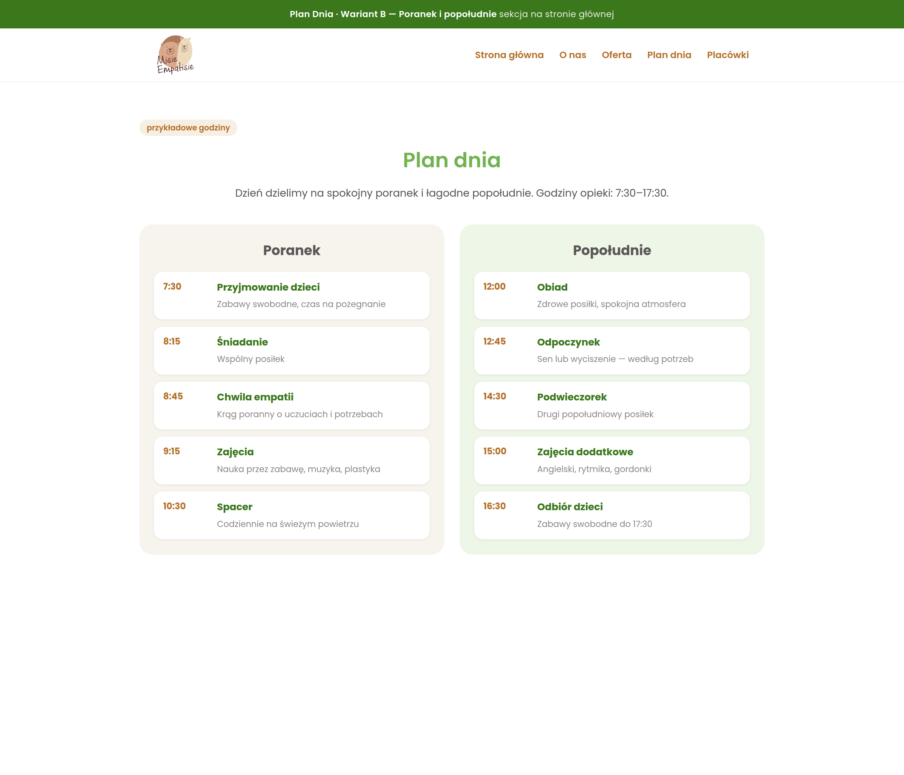
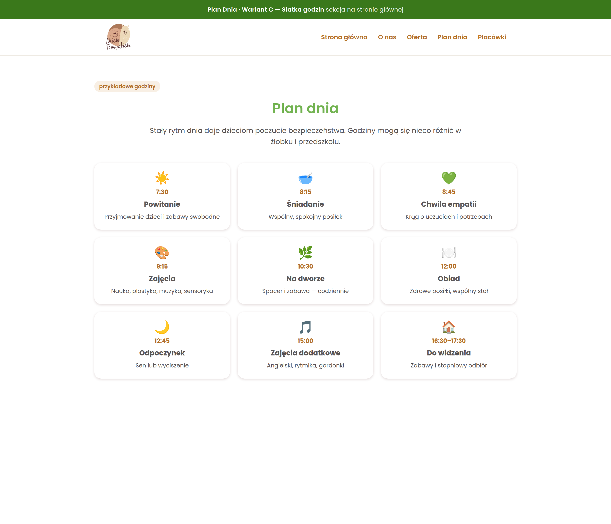
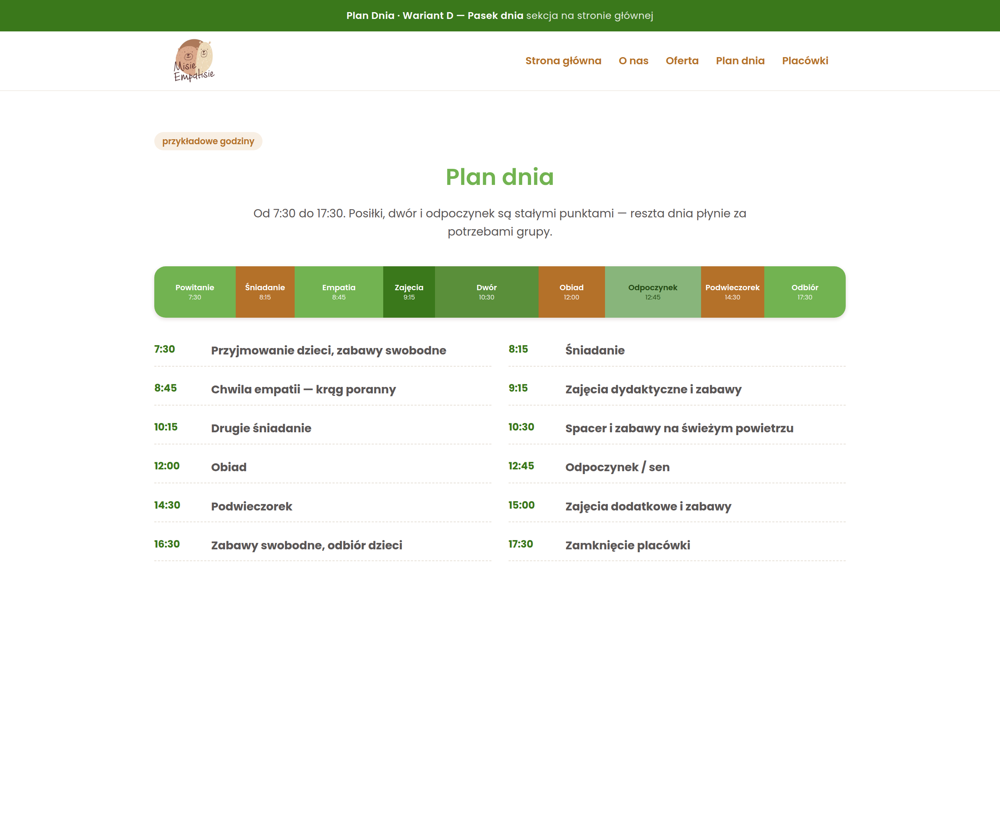

Nasze grupy — strona placówki

A. Karty grup
Trzy karty obok siebie, jak lokalizacje na stronie głównej. Najbliżej obecnego stylu.

B. Oś wieku
Ścieżka od żłobka do grupy starszej. Pokazuje, jak dziecko „rośnie” w placówce.

C. Żłobek i przedszkole
Dwa panele: najmłodsi osobno, przedszkole osobno. Czytelny podział oferty.

D. Lista z akcentem
Więcej tekstu, wiek z boku. Podobne do sekcji Terapia.
Plan dnia — strona główna

A. Oś czasu
Klasyczny plan z godzinami i opisem. Najbardziej szczegółowy.

B. Poranek i popołudnie
Dwie kolumny. Szybki przegląd całego dnia.

C. Siatka godzin
Karty z ikonami, jak sekcja „Jak działamy?”. Lekki, przyjazny układ.

D. Pasek dnia
Wizualny pasek od 7:30 do 17:30 plus lista. Dobry „skan” dnia.
To tylko makiety do wyboru. Na żywej stronie nic jeszcze nie zmieniłem — napisz, który wariant grup i który plan dnia wstawić (np. grupy C + plan B). Nazwy grup (Misie, Żyrafki, Słoniki) i godziny są przykładowe.